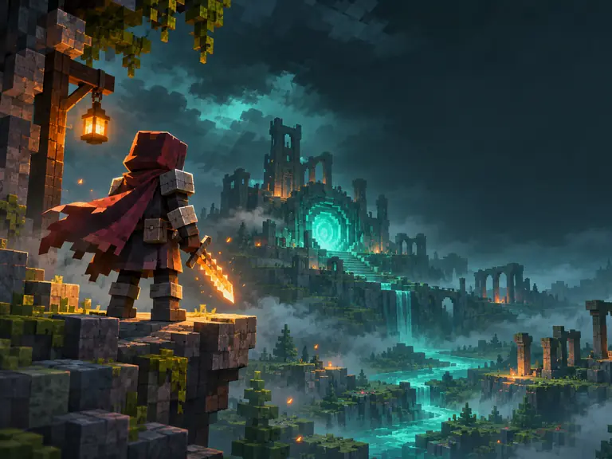
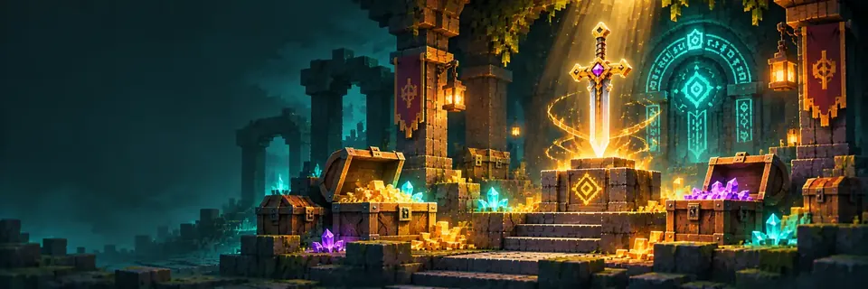
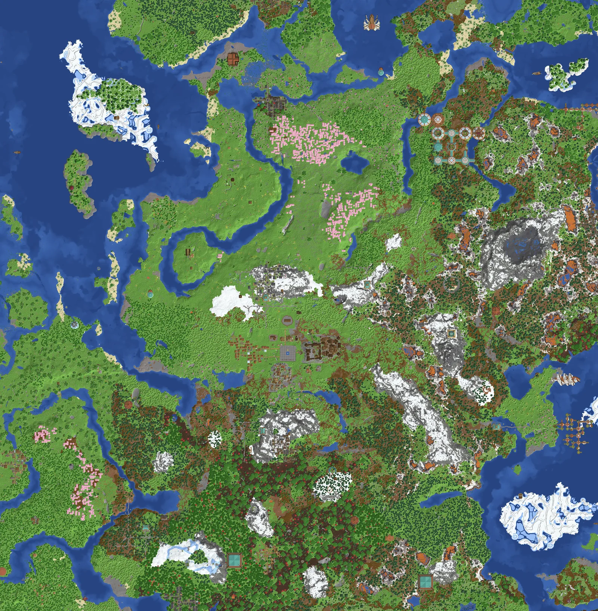

放血刀
●武器伤害: 10
●基础击中时获得资源: 6
隐藏属性：
+5 精准度
独特属性：
+16.25% 装备武器伤害
+20% 攻击速度
+6% 生命偷取
+15% 流血几率
+3 能量值再生
独特物品

裝 launcher，揀 2.1.4，再落朋友包
8192 MB部機要 16 GB RAM 或以上CtE2-friends-all-in-one-r12v7.zip 約 47 MB
5 個資料夾拖入實例，轉簡體中文
CtE2-BBSMC-zh_cn 拉最頂留意冇裝入唔到伺服器
resourcepacks 唔夠。CtE2-friends-all-in-one-r12v7.zip。重新解壓拖入，入世界撳 F3+T。用同一個地址入，第一次彈兩個畫面
comeplay.tplinkdns.com:25566
Server 有白名單。先將你嘅 Minecraft 名 send 畀 R1suuu。
貼上完整指紋
警告：dragonpanel.jar剔格，等 8 秒
叫你重開，就重開一次，再入
530b0d0c80afd1b8c3984b6d5a943dee5c23b3dc97fc2deffa756b63d66c7100留意冇原版自然回血，出門帶夠食物
comeplay.tplinkdns.com:25566X 2763 · Y 242 · Z 59792763 242 5979（山上，村內冇怪）2928 265 5536，3 分鐘重生要 Lv 20 先打到。你第一次打低佢（有份打）有一次性獎勵，10 秒後傳去私人主城，重生點設喺嗰度；之後再打唔會再傳Lv 24怪物等級 = 最近嗰個玩家嘅等級（隊伍取最低），上下差 1 級，限喺每個世界嘅範圍入面。
每個世界嘅門框同點火方法
X 3261 Z 6848（副本 21 號）。Lv 50–65X 3463 Z 6176 Y −50。Lv 60–75先做完嗰個世界嘅 Act 主線，再去下一個，會順好多。
技能可以裝輔助寶石（辅助宝石）。格數 = 技能等級 ÷ 4（最多 5 格），再受你自己等級限制：1 級最多 1 格 · 10 級 2 格 · 20 級 3 格 · 30 級 4 格 · 40 級 5 格。技能每升 1 級，你本身都要高 1 級。

R F C V，再加 Shift 就係第 5–8 格
/classup status 睇進度/classup trial/classup abandon（15 秒內再打一次確認，進度會清走）/classup status /classup start <職業 ID> /classup trial /classup leave /classup abandon成功就學到呢個職業嘅 1 招封印技，加職業專屬屬性加成：
昇華（遊戲內叫「升华」，任務書叫「宗师」）係後期第二棵樹，有 16 個職業，一次只可以揀 1 個；要轉就要先退晒點。
任務送嘅額外點數同重置點喺你所有角色之間共用（每個帳號最多 7 個角色）。
右邊數字係上限。
技能可以裝輔助寶石（辅助宝石）。格數 = 技能等級 ÷ 4（最多 5 格），再受你自己等級限制：1 級最多 1 格 · 10 級 2 格 · 20 級 3 格 · 30 級 4 格 · 40 級 5 格。技能每升 1 級，你本身都要高 1 級。
揀錯可以退：右鍵已學嘅技能或天賦退返點數（用重置點），或者用煉金做嘅重置藥水。
搜尋要打簡體字，關鍵字撳一下就複製。
睇晒天賦搜尋字 › 資料庫
棒 = 潛能 詞綴：普通 1 條 → 神话 6 條
●武器伤害: 10
●基础击中时获得资源: 6
隐藏属性：
+5 精准度
独特属性：
+16.25% 装备武器伤害
+20% 攻击速度
+6% 生命偷取
+15% 流血几率
+3 能量值再生
独特物品
示意：用「放血刀」做例子，數字係隨便揀嘅，每件都唔同。
每種 = 10 個細一級嘅；數字係铜币數
最穩定係親手打敵對怪（動物唔計）。掉幾多睇世界，同怪物等級無關。錢幣唔可以鑄造，只可以靠下面嘅方法賺。
價錢：揀 1 條（或者唔揀）係原價，每多揀 1 條 ×3。隨機款最平。
史诗 Lv 10 起、传说 Lv 25 起、神话 Lv 50 起；最多揀 3 / 3 / 4 條。

撳號碼睇詳情 ★ 新手村 ◆ 石碑

下一隻幾時出，睇「時間表」
大細 50/75/90/100 ×0.5/0.75/1/1.5 試行
每隻龍有 12 個主動、4 個被動，仲有「骑乘」同普通攻擊。
試行 技能範圍跟龍嘅等級變大，最高 ×4（決鬥 ×1），一次打 6–14 隻，仲有光柱、光環同隕石特效。睇範圍圖
技能欄 4+2 · 5+2 · 6+3 · 8+3 · 12+4
威力：100% · 130% · 170% · 200% · 300%
等級到咗每隻龍都學曉，但只可以裝備稀有度俾嘅格數。面板撳技能再撳格換，脫戰 5 秒先換得。
喺野外隨機出現，打死有機會跌龍蛋。唔可以餵、馴服或騎。
每次冇出蛋，機率就加，保底一定出。野生龙 1.2% 起，第 60 次一定出。輸入 /tb 睇而家有邊隻。
/tb睇邊度有咩、剩幾耐撳號碼睇詳情 ■ 首領場地 ◆ 野生龍出沒點
X 2765 Z 5979。全域石碑：唔使登記，喺任何石碑、用传送石、喺其他世界都傳得返嚟。
Lv 50 或以下死冇懲罰
決鬥係自願：唔想玩可以唔理。
/duel 玩家名lavaicejunglemodernrandom 就隨機揀場。/duel accept /duel deny接受或拒絕挑戰。挑戰 60 秒內回應，/duel cancel 收回。/duel list /duel leave睇有邊啲競技場、邊啲決鬥；停止觀戰。格數 = 要幾高級嘅裝。按最高級嗰件計，配飾同後期變體都算。
難度
階段
排序
六項評分（編者評分，撳一項睇原因）
練級路線 · 撳數字睇做乜